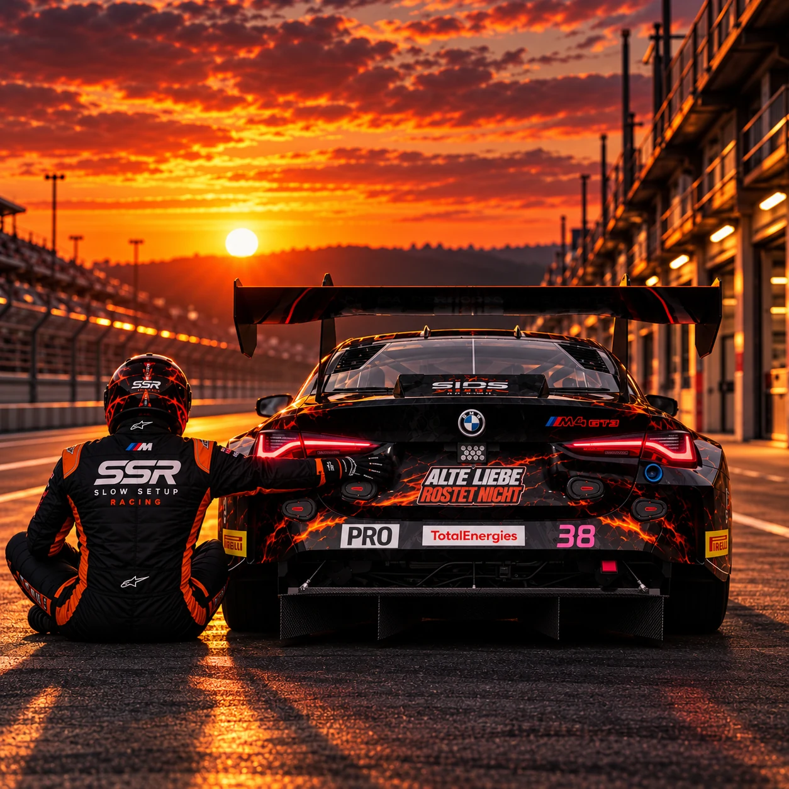
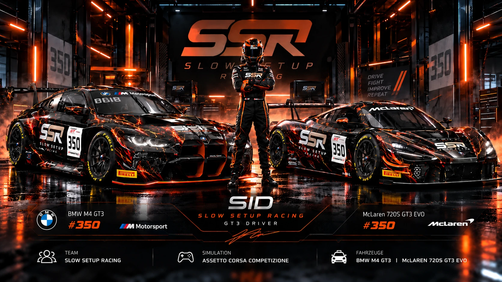

NCR TEAMCUP · SEASON 3
DOPPELMEISTERFahrerwertung und Teamwertung · Slow Setup Racing


SIMRACING • MOTORSPORT • DESIGN
Leidenschaft auf der Strecke. Präzision im Design.
Willkommen in der Welt von Sids Design Garage.

BMW M4 GT3 / ORIGINAL SSR LIVERY01 / ÜBER MICH
Ich bin M. Schulz – SimRacer und kreativer Kopf hinter Sids Design.
Sechs Jahre Simracing. Unzählige Runden. Siege, Niederlagen und die Leidenschaft, niemals stehenzubleiben.
Für mich ist Simracing mehr als ein Hobby: der Kampf um jede Zehntelsekunde, die Suche nach dem perfekten Setup und das Vertrauen in das eigene Team. Mein Zuhause ist Assetto Corsa Competizione – mit Slow Setup Racing auf der Rennstrecke.
Was einmal mit der Begeisterung für den virtuellen Motorsport begann, ist über die Jahre zu einem festen Bestandteil meines Lebens geworden.
Ich habe gelernt, dass Erfolg nicht einfach entsteht. Hinter jedem guten Ergebnis stecken unzählige Trainingsrunden, schwierige Rennen, Rückschläge und die Bereitschaft, immer wieder an sich zu arbeiten.
Es gab Momente, in denen alles zusammenpasste. Aber auch Rennen, in denen nichts funktionierte. Genau diese Erfahrungen haben mich geprägt. Denn für mich zählt nicht nur, wo man am Ende steht, sondern auch, welchen Weg man bis dahin gegangen ist.
Irgendwann wollte ich nicht mehr nur Rennen fahren. Ich wollte meinen Fahrzeugen auch eine eigene Identität geben.
So entwickelte sich meine Begeisterung für individuelle Liveries. Aus ersten eigenen Designs wurden immer neue Ideen, unterschiedliche Stilrichtungen und schließlich auch Projekte für andere Fahrer und Teams.
Mit Sids Design Garage habe ich dieser Leidenschaft einen eigenen Namen gegeben.
Mein Anspruch ist dabei immer derselbe: Ein Rennwagen soll nicht einfach nur gut aussehen. Sein Design soll Charakter haben, Wiedererkennungswert schaffen und schon im Stand vermitteln, wofür er auf der Rennstrecke steht.
Ob hinter dem Lenkrad meines BMW M4 GT3 oder bei der Entwicklung einer neuen Livery – ich möchte mich weiterentwickeln, Neues ausprobieren und meine eigenen Grenzen verschieben.
Meine Erfolge im Simracing machen mich stolz. Aber genauso wichtig sind mir die Menschen, mit denen ich diese Erfahrungen teile, und die Herausforderungen, an denen ich gewachsen bin.
Sids Design Garage ist deshalb mehr als eine Sammlung von Rennlackierungen. Es ist ein Teil meiner Geschichte.
Eine Geschichte über Leidenschaft, Ehrgeiz, Kreativität und den Willen, niemals aufzugeben.
Denn Erfolg ist kein Glück. Und ich bin noch nicht fertig.
02 / RACING
Jede Kurve eine Herausforderung. Jede Zehntelsekunde eine Entscheidung.
Im GT3-Rennsport entscheiden oft die kleinsten Details. Der richtige Bremspunkt, ein sauberer Kurvenausgang, das Vertrauen ins Fahrzeug und die Fähigkeit, auch unter Druck konzentriert zu bleiben.
In Assetto Corsa Competizione suche ich genau diese Herausforderung. Ob Sprint oder Endurance – jedes Rennen verlangt eine andere Herangehensweise. Mal zählt die kompromisslose Geschwindigkeit über eine einzelne Runde, mal die Konstanz über einen ganzen Stint.
Besonders faszinieren mich die technischen Feinheiten: das Zusammenspiel von Fahrwerk, Reifen, Balance und Fahrstil. Ein gutes Setup muss nicht nur schnell sein. Es muss mir das Vertrauen geben, das Fahrzeug am Limit zu bewegen.
Denn am Ende geht es nicht darum, einfach nur Runden zu fahren. Sondern darum, jede einzelne besser zu machen.

03 / RACING HALL OF FAME
Meisterschaften statt Einzelrennen. Sechs Platzierungen in den Gesamtwertungen – erkämpft durch Konstanz, Teamgeist und den Willen, immer weiterzumachen.
Fahrerwertung und Teamwertung · Slow Setup Racing
Teamwertung · Slow Setup Racing
2. Platz · Baltic Sim Motorsport
2. Platz · Pro-Klasse
3. Platz · Fahrerklasse Pro/AM
4. Platz · Meisterschaftswertung
Berücksichtigt sind ausschließlich Meisterschaftswertungen. Der Fahrer- und Teamtitel in NCR Season 3 zählen als zwei Titel.
04 / DESIGN
DEIN TEAM. DEIN FAHRZEUG. DEINE IDENTITÄT.
Eine Livery ist mehr als eine Rennlackierung. Sie macht aus einem GT3-Fahrzeug einen unverwechselbaren Auftritt auf der Rennstrecke.
Bei Sids Design Garage entstehen individuelle Designs für SimRacer, Teams und Motorsport-Projekte – von aggressiven Rennlackierungen bis hin zu visuellen Teamkonzepten.
Keine gewöhnlichen Designs. Sondern Motorsport mit Charakter.
BMW M4 GT3, McLaren 720S GT3 Evo, Nissan GT3 und weitere eigene Designs – darunter die Lava Forged Collection.
COLLECTION ENTDECKEN ↗Arbeiten für Baltic Sim Motorsport, Rock Motorsport, Avlex Racing, Synex Esports und Team Perfectum.
PROJEKTE ANSEHEN ↓Markante Motorsport-Grafiken, Logos und visuelle Identitäten für einen wiedererkennbaren Auftritt.
DESIGNARBEITEN ANSEHEN ↓Originaldesigns, echte Kundenprojekte und individuelle Branding-Arbeiten.
Lava Forged · EIGENE DESIGNS · MOTORSPORT-REPLIKEN
 ALLE 8 FAHRZEUGE ANSEHEN ↗
ALLE 8 FAHRZEUGE ANSEHEN ↗Alle meine Liveries an einem Ort – vom BMW M4 GT3 und McLaren 720S GT3 Evo bis zum Nissan GT-R Nismo GT3 und meinen weiteren GT3-Designs.


Mercedes – 4 Originalaufnahmen.


Porsche – 5 Originalaufnahmen.


BMW – 8 Originalaufnahmen.


Ferrari 296 GT3 – 4 Originalaufnahmen.


Ford – 5 Originalaufnahmen.


Lamborghini – 6 Originalaufnahmen.


McLaren 720S – 4 Originalaufnahmen.


Porsche Cup – 5 Originalaufnahmen.


Porsche – 7 Originalaufnahmen.


BMW – 11 Originalaufnahmen.


McLaren – 4 Originalaufnahmen.


Porsche – 4 Originalaufnahmen.


BMW – 5 Originalaufnahmen.


Ferrari 296 – 6 Originalaufnahmen.


Porsche – 5 Originalaufnahmen.


Lexus RC F GT3 – 6 Originalaufnahmen.
Individuelle Rennlackierungen und visuelle Identitäten für die virtuelle Rennstrecke.
Du hast ein Team, ein Fahrzeug oder eine Idee für einen unverwechselbaren Auftritt auf der Rennstrecke? Lass uns darüber sprechen.
05 / MEINE MUSIK
Erfolg ist kein Glück – mein Soundtrack zu Leidenschaft, Rückschlägen und dem Willen, weiterzukämpfen.
Sechs Songs. Eine Geschichte. Vom ersten Kampf bis zur Zielflagge.
Das Album ist veröffentlicht. Anhören direkt auf Spotify und weiteren Musikplattformen – ohne eingebetteten Player.
06 / KONTAKT
Du hast eine Idee für eine GT3-Livery oder möchtest dich über ein Designprojekt austauschen? Melde dich gerne.
Lieber direkt schreiben? E-Mail an kontakt@sidsdesign.de ↗
Dein direkter Kontakt: kontakt@sidsdesign.de